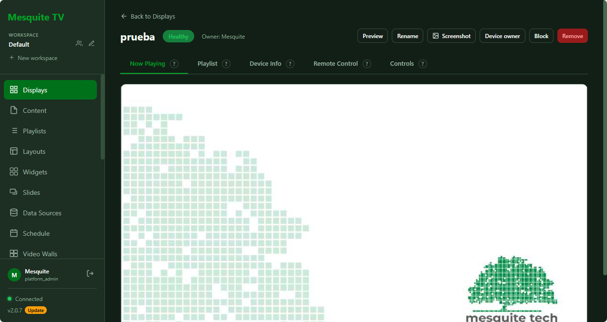
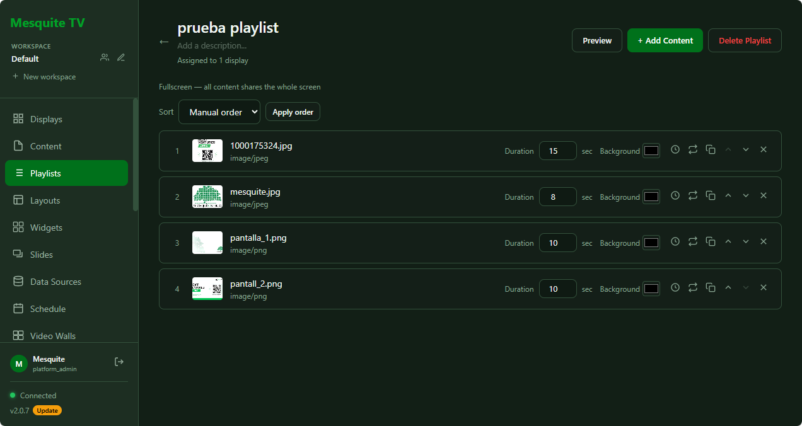
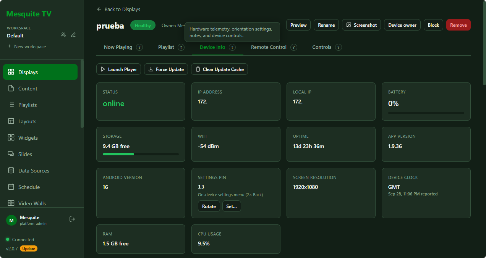

Playlists y programación
Sube imágenes, video y páginas web; ordénalos y programa cuándo se muestran, por pantalla o por grupo.
Señalización digital · Mesquite Studio
Mesquite TV programa, actualiza y monitorea cada pantalla en tiempo real. Playlists, videowalls, widgets y alertas, desde un panel autoalojado y sin licencia por dispositivo.
Código abierto y autoalojado — corre en cualquier pantalla con navegador.
menos costo por pantalla frente a soluciones cerradas equivalentes
código abierto y autoalojado — sin licencia por dispositivo
cada pantalla sigue reproduciendo su último contenido descargado
Funciones
Desde una sola pantalla en recepción hasta cientos repartidas en varias sucursales.
Sube imágenes, video y páginas web; ordénalos y programa cuándo se muestran, por pantalla o por grupo.
Une varias pantallas en una sola imagen, o divide una pantalla en secciones con un editor visual.
Reloj, clima, RSS, redes sociales y directorio de lobby, listos para insertar en cualquier layout.
Convierte una pantalla táctil en un directorio o catálogo interactivo, sin salida a otras apps.
Recibe un correo apenas una pantalla se desconecta, con protección para no saturar tu bandeja.
Cada pantalla guarda su último contenido y lo sigue reproduciendo aunque se caiga la conexión.
Consulta qué se mostró, en qué pantalla y cuándo, con reportes exportables a CSV.
Conecta Mesquite TV con tus propios sistemas mediante una API REST documentada.
Galería
Un panel sencillo para administrar, y un player que solo se dedica a reproducir.



